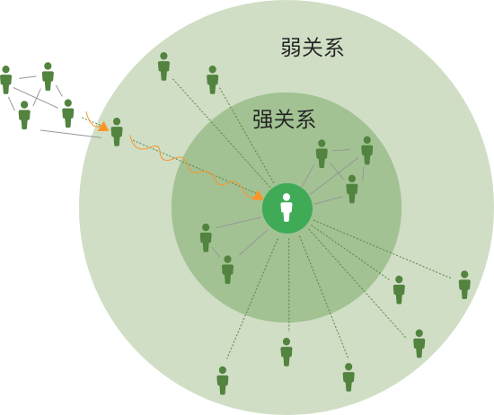

初识好友（无手机通讯录）
平台上的好友，但互相在手机通讯录里未存对方的号码
一度人脉
1.我手机通讯录里的人
2.手机通讯录里有我的人
二度人脉
我手机通讯录里的人的手机通讯录里的人
三度人脉
我二度人脉的手机通讯录里的人
图标详解
图标中的蓝色粗线包含++
熟识圈好友：互为熟识好友
熟识好友（双向手机通讯录）：互相在手机通讯录里存了手机号码
相识好友（单向通讯录）：我的手机通讯录中存了对方的号码，但对方的手机通讯录里未存我的号码
相识好友（单向通讯录）：我的手机通讯录里未存对方的号码，但对方手机通讯录中存了我的号码
 中间的橙色线及其他橙色线包含+
中间的橙色线及其他橙色线包含+
人脉关系强弱
| 强弱 | 关系 |
|---|---|
| 超强 | 熟识圈好友 |
| 强 | 熟识好友 |
| 强 | 相识好友 |
| 弱 | 初识好友 |
| 弱 | 二度好友 |
| 弱 | 三度好友 |
| 弱 | 四度好友 |
| 弱 | 五度好友 |
| 弱 | 六度好友 |
| 弱 | 平台用户 |
相对于强关系而言，人们同样可以从联系不频繁的弱关系人群里获得帮助
六度人脉理论
该理论于1929年，由匈牙利作家Frigyes Karinthy在短篇故事‘Chains’中首次提出的。1967年，美国社会学家Stanley Milgram设计了一种新的方法来检验这一理论，他将其称之为‘小世界现象’。
他随机从中西部挑选出一批志愿者，要求志愿者们将包裹邮寄给马萨诸塞州一个素不相识的人。发件人知道收件人的姓名、职业和大致位置。按照指令，他们先将包裹寄给自己朋友圈中根据名字最有可能认识目标的一个人，那个人再依次类推，下一个人再依次类推，直到包裹最终到达目标收件人手中。尽管参与者预计这一锁链至少会包含上百个中间人，但最终成功送达包裹的锁链中平均只有5-7个中间人，使得‘六度人脉’理论应运而生。 六度人脉关系理论，以认识朋友的朋友为基础，通过网络扩展自己的人脉。并且无限扩张自己的人脉，在彼此需要的时候，可以随时得到该人脉的帮助。在现实社会实践中，通过六度人脉关系理论所扩展的人脉，在社会的各个领域，各个角落中进行着彼此之间的需求供应。 简单的说，每一个擦肩而过的陌生人都有可能是你的第六度人脉。